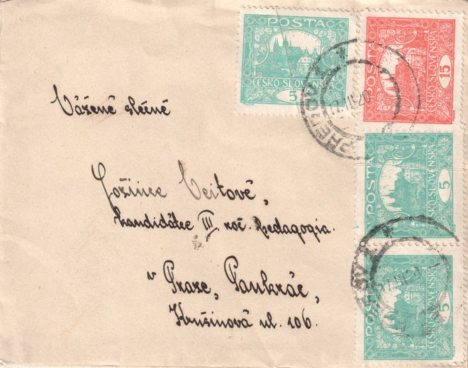
Beispiele der postalischen Verwendung
Eine Galerie echter Briefe, Postkarten und Postformulare, frankiert mit der 15 h-Marke — einzeln und in Kombination mit anderen Werten, in gewöhnlicher und ungewöhnlicher Form. Anders als die ausführlichen Analysen in den Artikeln bietet dies einen schnellen Überblick über die Bandbreite der Verwendung dieses Werts; die Galerie wächst laufend mit der Sammlung. Klicken Sie auf ein Vorschaubild zum Vergrößern.
Briefe
#115h + 3× 5h = 30hkombinierte Frankatur
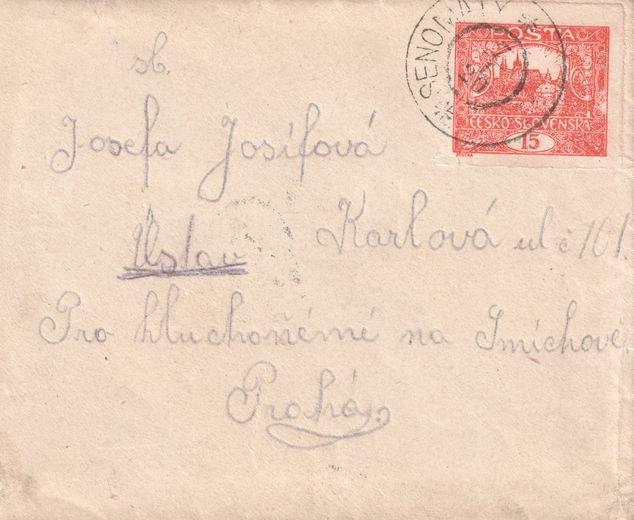
#2 · Vorderseite2× 15h = 30h
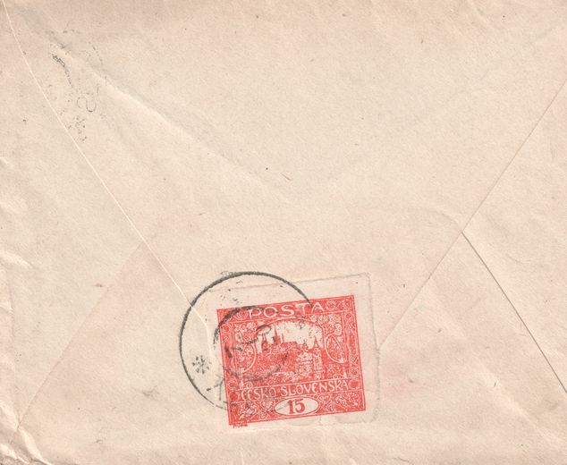
#2 · Rückseite2× 15h = 30hVerschlussmarke
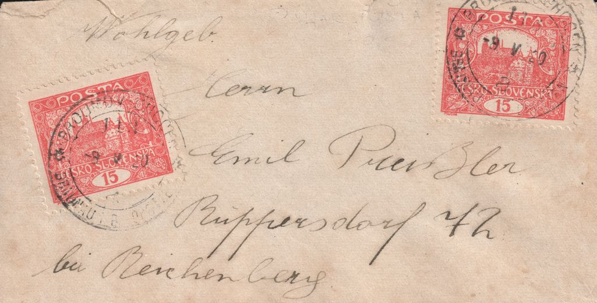
#32× 15h = 30hMehrfachfrankaturungewöhnliche Platzierung
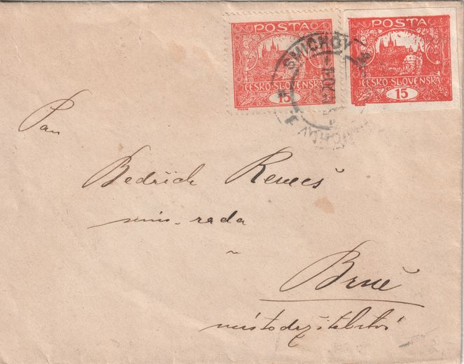
#42× 15h = 30hMehrfachfrankatur
Postkarten
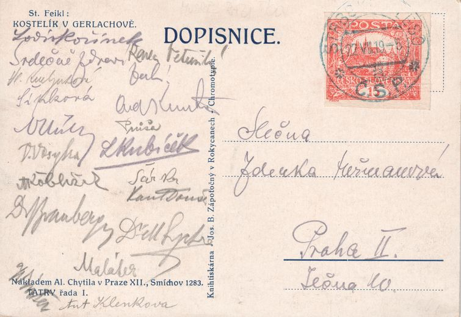
#51× 15hfrühe VerwendungII. Periode
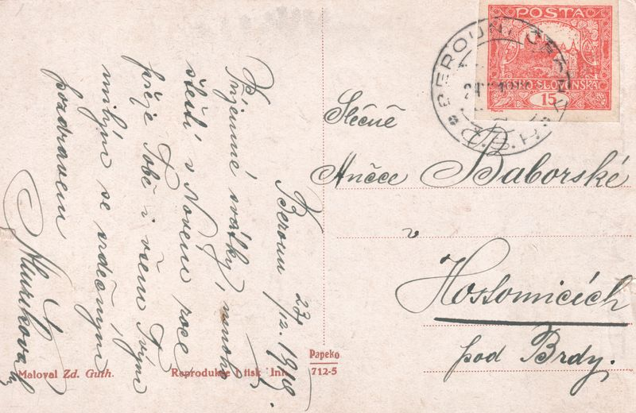
#61× 15hungezähntII. Periode
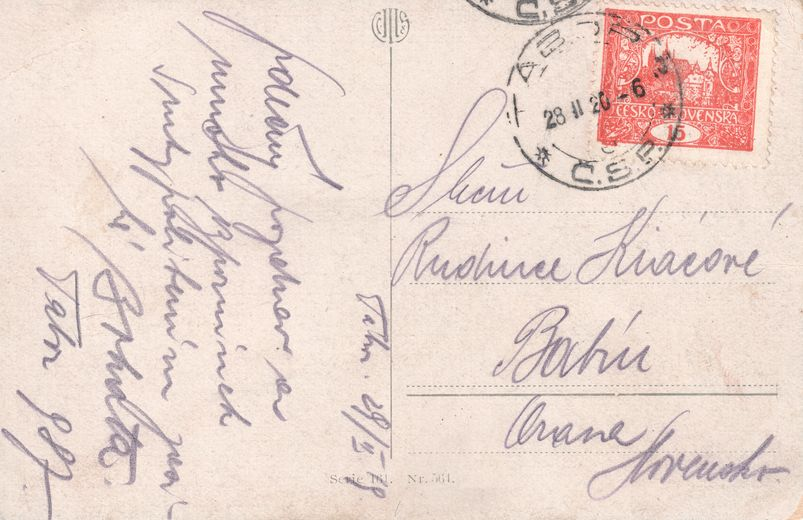
#71× 15hII. Periode
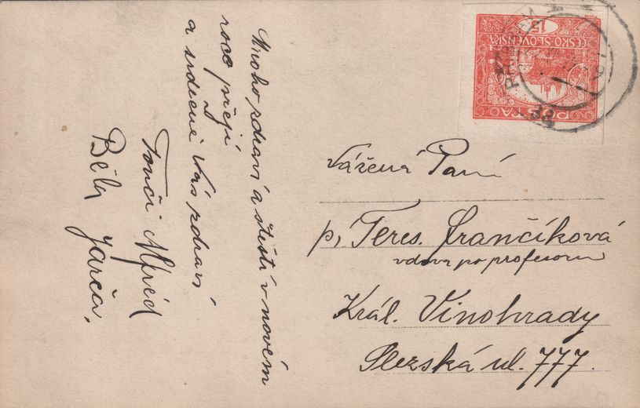
#81× 15hungezähnt
Postformulare
Aufgabescheine, Zahlkarten und Paketkarten — Formulare, die Geld- und Paketsendungen begleiten, oft mit einer ungewöhnlichen Mischfrankatur.
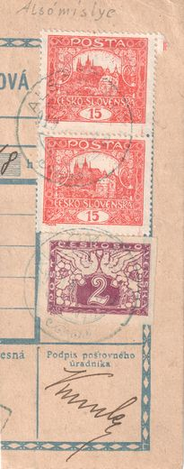
#92× 15h + 2hMehrfachfrankaturkombinierte Frankatur
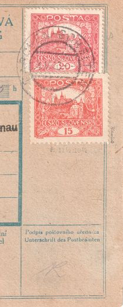
#1020h + 15h = 35hkombinierte Frankatur
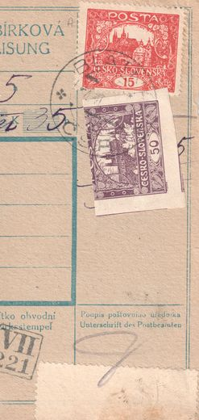
#1115h + 50h = 65hkombinierte Frankatur
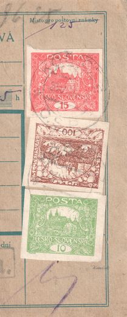
#1215h + 100h + 10h = 125hkombinierte Frankatur
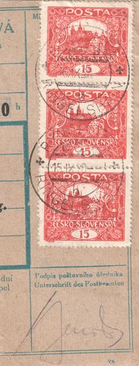
#13 · Vorderseite3× 15h + 5h = 50hMehrfachfrankaturkombinierte FrankaturIV. Periode
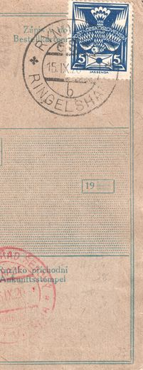
#13 · Rückseite3× 15h + 5h = 50hMehrfachfrankaturkombinierte FrankaturIV. Periode
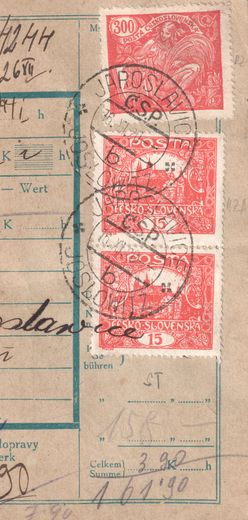
#14 · Vorderseite300h + 2× 15h + 20h = 350hMehrfachfrankaturkombinierte FrankaturIII. Periode
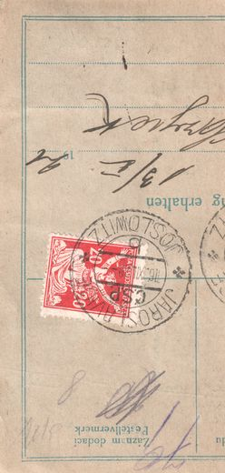
#14 · Rückseite300h + 2× 15h + 20h = 350hMehrfachfrankaturkombinierte FrankaturIII. Periode
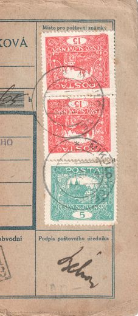
#152× 15h + 5h = 35hMehrfachfrankaturkombinierte Frankatur